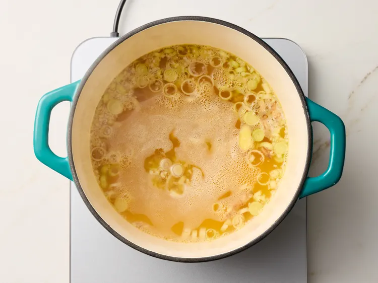
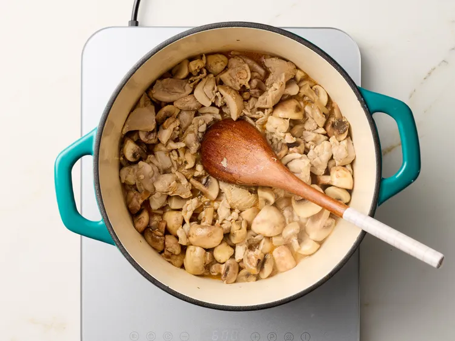
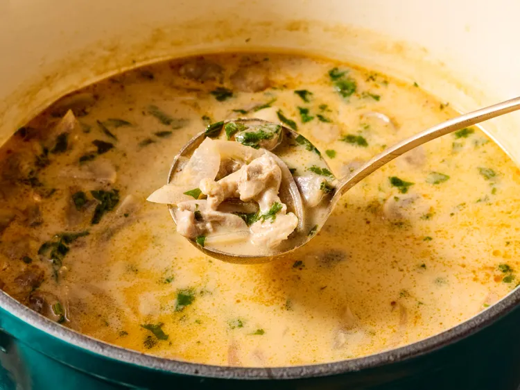

Fresh lemongrass and ginger root permeate this coconut-y aromatic broth, which swirls with notes of fish sauce, garlic, red curry, and lime. Chicken, mushrooms, and red onion soak up the flavor, and the bowl is topped off with cilantro, lime wedges, and fresh sliced jalapenos. Chef John notes: "By controlling the amount of [spicy red curry] paste you add, you can tailor this to your own threshold of pain."
Step 1
Stir together lemongrass, garlic, and ginger in a large stockpot over medium-high heat until fragrant. Pour in chicken broth and bring to a boil. Reduce heat to low and simmer for 30 minutes. Strain broth and set aside. Discard lemongrass, garlic, and ginger.

step 2
Heat oil in a large soup pot over medium heat. Cook and stir chicken in hot oil for 5 minutes. Add mushrooms and cook for 5 more minutes. Stir in fish sauce, red curry paste, and lime juice until combined.

step 3
Pour in broth and coconut milk; return to a simmer and cook on low heat for 15 to 20 minutes. Skim off any excess oil and fat that rises to the top and discard.
step 4
Add red onion; cook until onion softens, about 5 minutes. Remove from heat and stir in about 1/2 of the cilantro. Portion soup into bowls and serve with plates of lime wedges, jalapeño rings, and remaining cilantro.
step 5
Serve and enjoy.

The only ingredient that may be difficult to find is the fresh lemongrass. I've found most large grocery stores carry it, but if not, you can substitute a few tablespoons of lemon zest.
The nutrition data for this recipe includes the full amount of the ingredients in the broth. The actual amount consumed will vary.
Home